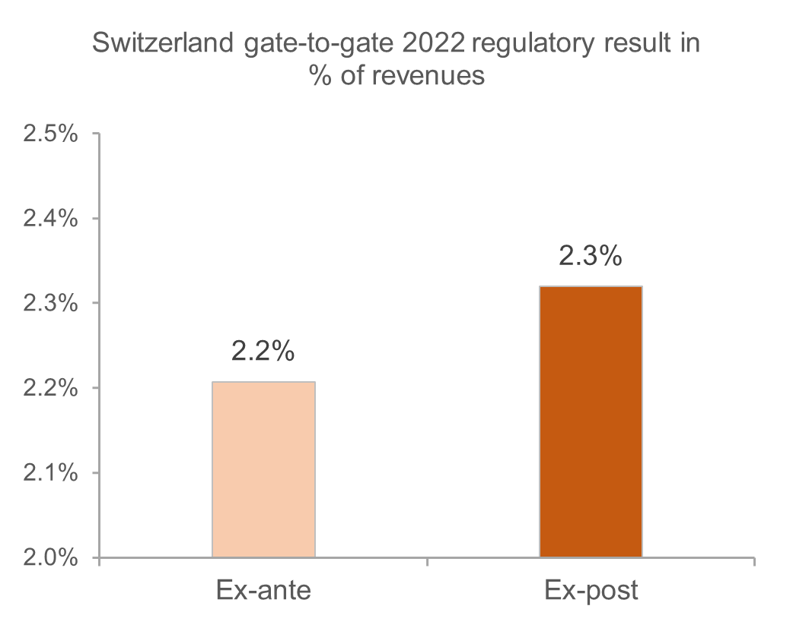

4.7 Gate-to-gate
Monitoring of gate-to-gate ANS costs
Gate-to-gate regulatory result (RR)

For the ANSPs providing services in the en route and terminal charging zones of Switzerland covered by the SES performance scheme, the ex-post gate-to-gate regulatory result in 2022 amounts to +6.3 MCHF (-1.2 MCHF for en route and +7.5 MCHF for terminal - see boxes 10 to 14 for the detailed analysis at charging zones level), corresponding to 2.3% of gate-to-gate ANS revenues.
This is higher than the return planned for the year (2.2% of gate-to-gate revenues). See also Note 1 in items 10.